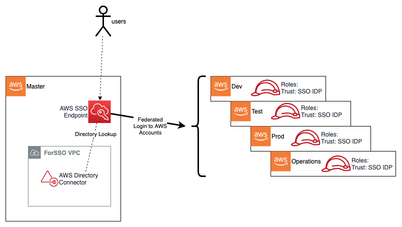

Authorization and Authenticationlink
Overviewlink
The AWS Secure Environment Architecture makes extensive use of AWS authorization and authentication primitives from the Identity and Access Management (IAM) service as a means to enforce the guardrail objectives of the AWS Secure Environment Architecture, and govern access to the set of accounts that makes up the Organization.
Relationship to the Organization Management (root) AWS Accountlink
AWS accounts, as a default position, are entirely self-contained with respect to IAM principals - their Users, Roles, Groups are independent and scoped only to themselves. Accounts created by AWS Organizations deploy a default role with a trust policy back to the Organization Management (root). By default, this role is named the OrganizationAccountAccessRole; by contrast, the AWS Secure Environment Architecture allows customers to customize this role by defining it in organization-admin-role (default: AWSCloudFormationStackSetAdministrationRole).
{
"Role": {
"Path": "/",
"RoleName": "AWSCloudFormationStackSetExecutionRole",
"Arn": "arn:aws:iam::111111111111:role/AWSCloudFormationStackSetExecutionRole", // Child account.
"AssumeRolePolicyDocument": {
"Version": "2012-10-17",
"Statement": [
{
"Effect": "Allow",
"Principal": {
"AWS": "arn:aws:iam::123456789012:root" // Organization Management (root) account may assume this role.
},
"Action": "sts:AssumeRole"
}
]
}
}
}
As discussed, the AWS Organization resides in the Organization Management (root) account. This account is not used for workloads and is primarily a gateway to the entire cloud footprint for a high-trust principal. This is realized via the role defined in organization-admin-role (default: AWSCloudFormationStackSetAdministrationRole). It is therefore crucial that the Organization Management (root) account root credentials be handled with extreme diligence, and with a U2F hardware key enabled as a second-factor (and stored in a secure location such as a safe).
Break Glass Accountslink
Given the Organizational-wide trust relationship to the role defined in organization-admin-role (default: AWSCloudFormationStackSetAdministrationRole) and its broad exclusion from SCPs (discussed below), the assumption of this role grants 'super admin' status, and is thus an extremely high privilege operation. The ability to assume this role should be considered a 'break glass' capability - to be used only in extraordinary circumstances. Access to this role can be granted by IAM Users or IAM Roles in the Organization Management (root) account (via SSO) - as with the Organization Management (root) account credentials, these should be handled with extreme diligence, and with a U2F hardware key enabled as a second-factor (and stored in a secure location such as a safe).
TBD: This role was locked down starting in v1.2.5 - Add further details here /TODO
Control Plane Access via AWS SSOlink
The vast majority of end-users of the AWS cloud within the Organization will never use or interact with the Organization Management (root) account, or indeed the root users of any child account in the Organization. The AWS Secure Environment Architecture recommends instead that AWS SSO be provisioned in the Organization Management (root) account (a rare case where Organization Management (root) account deployment is mandated).
Users will login to AWS via the web-based endpoint for the AWS SSO service:

Via an AWS Directory Connector deployed in the Organization Management (root) account, AWS SSO will authenticate the user based on the underlying Microsoft AD installation (in the Central account). Based on group membership, the user will be presented with a set of roles to assume into those accounts. For example, a developer may be placed into groups that permit Admin access in the Dev account and Readonly access in Test; meanwhile an IT Director may have high-privilege access to most, or all, accounts. In effect, AWS SSO adds SAML IdP capabilities to the AWS Managed Microsoft AD, with the AWS Console acting as a service-provider (SP) in SAML parlance. Other SAML-aware SPs may also be used with AWS SSO.
SSO User Roleslink
AWS SSO creates an identity provider (IdP) in each account in the Organization. The roles used by end users have a trust policy to this IdP. When a user authenticates to AWS SSO (via the underlying AD Connector) and selects a role to assume based on their group membership, the SSO service provides the user with temporary security credentials unique to the role session. In such a scenario, the user has no long-term credentials (e.g. password, or access keys) and instead uses their temporary security credentials.
Users, via their AD group membership, are ultimately assigned to SSO User Roles via the use of AWS SSO Permission Sets. A permission set is an assignment of a particular permission policy to a set of accounts. For example:
An organization might decide to use AWS Managed Policies for Job Functions that are located within the SSO service as the baseline for role-based-access-control (RBAC) separation within an AWS account. This enables job function policies such as:
- Administrator - This policy grants almost all actions for all AWS services and for all resources in the account.
- Developer Power User - This user performs application development tasks and can create and configure resources and services that support AWS aware application development.
- Database Administrator - This policy grants permissions to create, configure, and maintain databases. It includes access to AWS database services, such as Amazon DynamoDB, Amazon Relational Database Service (RDS), and Amazon Redshift.
- View-Only User - This policy grants
List*,Describe*,Get*,View*, andLookup*access to resources for most AWS services.
Principal Authorizationlink
Having assumed a role, a user’s permission-level within an AWS account with respect to any API operation is governed by the IAM policy evaluation logic flow (detailed here):

Having an Allow to a particular API operation from the Role (i.e. Session Policy) does not necessarily imply that API operation will succeed. As depicted above, Deny may result due to another evaluation stage in the logic; for example a restrictive permission boundary or an explicit Deny at the Resource or SCP (account) level. SCPs are used extensively as a guardrailing mechanism in the AWS Secure Environment Architecture, and are discussed in a later section.
Root Authorizationlink
Root credentials for individual accounts in an AWS organization may be created on demand via a password reset process on the unique account email address; however, the AWS Secure Environment Architecture specifically denies this via SCP. Root credentials authorize all actions for all AWS services and for all resources in the account (except anything denied by SCPs). There are some actions which only root has the capability to perform which are found within the AWS online documentation. These are typically rare operations (e.g. creation of X.509 keys), and should not be required in the normal course of business. Any root credentials, if ever they need to be created, should be handled with extreme diligence, with U2F MFA enabled.
Service Roleslink
A service role is an IAM Role that a service assumes to perform actions in an account on the user’s behalf. When a user sets up AWS service environments, the user must define an IAM Role for the service to assume. This service role must include all the permissions that are required for the service to access the AWS resources that it needs. Service roles provide access only within a single account and cannot be used to grant access to services in other accounts. Users can create, modify, and delete a service role from within the IAM service. For example, a user can create a role that allows Amazon Redshift to access an Amazon S3 bucket on the user’s behalf and then load data from that bucket into an Amazon Redshift cluster. In the case of SSO, during the process in which AWS SSO is enabled, the AWS Organizations service grants AWS SSO the necessary permissions to create subsequent IAM Roles.
Service Control Policieslink
Service Control Policies are a key preventative control recommended by the AWS Secure Environment Architecture. It is crucial to note that SCPs, by themselves, never grant permissions. They are most often used to Deny certain actions at a root, OU, or account level within an AWS Organization. Since Deny always overrides Allow in the IAM policy evaluation logic, SCPs can have a powerful effect on all principals in an account, and can wholesale deny entire categories of actions irrespective of the permission policy attached to the principal itself - even the root user of the account.
SCPs follow an inheritance pattern from the root of the Organization:

In order for any principal to be able to perform an action A, it is necessary (but not sufficient) that there is an Allow on action A from all levels of the hierarchy down to the account, and no explicit Deny anywhere. This is discussed in further detail in How SCPs Work.
The AWS Secure Environment Architecture recommends the following SCPs in the Organization:
PBMM Onlylink
This is a comprehensive policy whose main goal is to provide a PBMM-compliant cloud environment, namely prohibiting any non-centralized networking, and mandating data residency in Canada. It should be attached to all non-Unclass OUs.
| Policy Statement ID (SID) | Description |
|---|---|
DenyNetworkPBMMONLY |
Prevents the creation of any networking infrastructure in the workload accounts such as VPCs, NATs, VPC peers, etc. |
DenyAllOutsideCanadaPBMMONLY |
Prevents the use of any service in any non-Canadian AWS region with the exception of services that are considered global; e.g. CloudFront, IAM, STS, etc |
ScopeSpecificGlobalActionsToCanadaUSE1 |
Within services that are exempted from DenyAllOutsideCanadaPBMMONLY, scope the use of those services to the us-east-1 region |
PBMM Unclass Onlylink
This is broadly similar to PBMM Only; however it relaxes the requirement for Canadian region usage, and does not prohibit network infrastructure creation (e.g. VPCs, IGWs). This is appropriate for OUs in which AWS service experimentation is taking place.
| Policy Statement ID (SID) | Description |
|---|---|
DenyUnclass |
Prevents the deletion of KMS encryption keys and IAM password policies |
DenyAllOutsideCanadaUS |
Prevents the use of any service in any region that is not ca-central-1 or us-east-1, with the exception of services that are considered global; e.g. CloudFront, IAM, STS, etc |
PBMM Guardrails (Parts 1 and 2)link
PBMM Guardrails apply across the Organization. These guardrails protect key infrastructure, mandate encryption at rest, and prevent other non-PBMM configurations. Note that this guardrail is split into two parts due to a current limitation of SCP sizing, but logically it should be considered a single policy.
| Policy Statement ID (SID) | Description |
|---|---|
DenyTag1 |
Prevents modification of any protected security group |
DenyTag2 |
Prevents modification of any protected IAM resource |
DenyS3 |
Prevents modification of any S3 bucket used for Accelerator purposes |
ProtectCloudFormation |
Prevents modification of any CloudFormation stack used for Accelerator tool purposes |
DenyAlarmDeletion |
Prevents modification of any cloudwatch alarm used to alert on significant control plane events |
ProtectKeyRoles |
Prevents any IAM operation on Accelerator tool IAM roles |
DenySSMDel |
Prevents modification of any ssm resource used for Accelerator tool purposes |
DenyLogDel |
Prevents the deletion of any log resource in Cloudwatch Logs |
DenyLeaveOrg |
Prevents an account from leaving the Organization |
DenyLambdaDel |
Prevents the modification of any guardrail Lambda function |
BlockOther |
Prevents miscellaneous operations; e.g. Deny ds:DisableSso |
BlockMarketplacePMP |
Prevents the modification or creation of a cloud private marketplace |
DenyRoot |
Prevents the use of the root user in an account |
EnforceEbsEncryption |
Enforces the use of volume level encryption in running instances |
EnforceEBSVolumeEncryption |
Enforces the use of volume level encryption with EBS |
EnforceRdsEncryption |
Enforces the use of RDS encryption |
EnforceAuroraEncryption |
Enforces the use of Aurora encryption |
DenyRDGWRole |
Prevents the modification of a role used for Remote Desktop Gateway |
DenyGDSHFMAAChange |
Prevents the modification of GuardDuty & Security Hub |
Encryption at Restlink
Note that the *Encryption* SCP statements above, taken together, mandate encryption at rest for block storage volumes used in EC2 and RDS instances.
Quarantine Deny Alllink
This policy can be attached to an account to 'quarantine' it - to prevent any AWS operation from taking place. This is useful in the case of an account with credentials which are believed to have been compromised.
| Policy Statement ID (SID) | Description |
|---|---|
DenyAllAWSServicesExceptBreakglassRoles |
Blanket denial on all AWS control plane operations for all non-break-glass roles |
Quarantine New Objectlink
This policy is applied to new accounts upon creation. After the installation of guardrails, it is removed. In the meantime, it prevents all AWS control plane operations except by principals required to deploy guardrails.
| Policy Statement ID (SID) | Description |
|---|---|
DenyAllAWSServicesExceptBreakglassRoles |
Blanket denial on all AWS control plane operations for all non-break-glass roles |